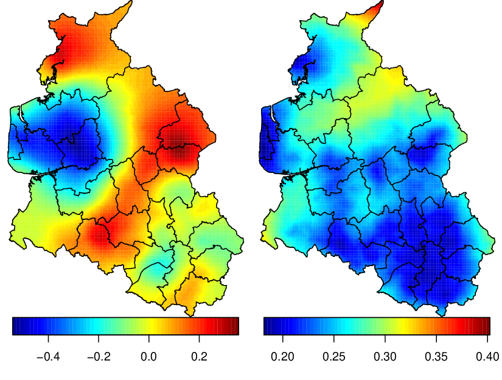

In this section we start to show the fitting process using the SPDE approach, [Lindgren et al., 2011]. This starter is by fitting a toy geostatistical model: Gaussian response without covariate. We use the Bayesian approach and found the posterior marginal distributions using the Integrated Nested Laplace Approximation - INLA, [Rue et al., 2009] implemented on the INLA R package. The ideas for application of the SPDE approach using the INLA package are well described on [Lindgren, 2012] and on [Lindgren and Rue, 2013].
The dataset used are a tree column data.frame simulated on the previous section and provided on INLA package. It can be called by
this is a data.frame where the two first columns are the coordinates and the third is the response simulated at this locations
We consider the n observations yi on locations the si, i = 1,...,n, and we define the model
|
| (3.1) |
We consider that x is a realization of a Gaussian Field, with Matérn correlation function parametrized by the smoothness parameter ν and the scale κ, such the parametrization in [Lindgren et al., 2011].
With this toy example we show with details how we make a good triangulation, prepare the data, fit the model, extract the results from output and make predictions on locations where we don’t have observed the response. In this section we use the default priors for all the parameters.
To the estimation mesh we need to define the mesh. We show it on Chapter 2.2 and here we use the fift mesh builded for the toy example on Chapter 2.2
With that mesh, we define the SPDE model using the function inla.spde2.matern()
The principal arguments are the mesh object and the α parameter, related to the smoothness parameter of the process.
The toy dataset was simulated with α = 2 and we use this value here (with the mesh five)
Also, from section 2.4 we define the projector matrix
The stack functionality is a very useful functionality to work with SPDE on INLA package. This allow to fit more general SPDE models, such as replicated or correlated ones, or more general models that includes more than one projector matrix. Using it we avoid errors in the index construction, [Lindgren, 2012]. Examples on more complex models, with the details, can be found on [Lindgren, 2012], [Cameletti et al., 2012] and [Lindgren and Rue, 2013].
In a section on the previous Chapter we define the projector matrix to project the latent field on the response locations. If we have have covariates measured at same locations (with same dimention of the response), we need a more general definition of the linear predictor. On the toy example, we have to include the effect of the random field and the intercept that is treated as a covariate. So, we define the new intercept η* as
that is a sum of two components each one can be represented as a product of a projector matrix and an effect.
We have that the SPDE approach defines a model on the mesh nodes, and usually the number of nodes are not equal to the number of locations where we have data observed. The inla.stack function allow us to work with predictors that includes terms with different dimentions. The three main inla.stack() arguments are the data vectors list, a list of projector matrices (each one related to one block effect) and the effects.
We need two projector matrices, the projector matrix for the latend field and a matrix to map one-to-one the ’covariate’ and the response. This last one can be just a constant instead a diagonal matrix. So, we have
The inla.stack() function automatically eliminates the elements when any column of each projector matrix has zero sum, generating a correspondent simplified projector matrix. The inla.stack.A() extracts a simplified predictor matrix to use on the inla() function and the inla.stack.data() function extract the correspondent organized data.
The simplified projector matrix from the stack is the binded by column the simplified projectors matrices from each effect block. So, in this case we have
one columns more than the number of columns with non null elements of the projector matrix.
To fit the model need to remove the intercept from the formulae and add it as a covariate term, because we a have projector matrix that allows it as a covariate effect. Of course, we must have to pass these predictor matrix on control.predictor argument of the inla function
An object from inla() function has a set of several results. These includes summaries, marginal posterior densities of each parameter on the model: the regression parameters, each element of the latent field and all the hyperparameters.
The summary of β0 is obtained by
The summary of 1∕σe2 is obtained by
A marginal distribution on inla() output is just two vector, where one represents the parameter values and another the density. Any posterior marginal can be transformed. If we want the posterior marginal for σe, the square root of the σe2, we use
and now we are able to summarize this distribution
and, of course, we can visualize it.
The parameters of the latent field is parametrized as log(κ) and log(τ), where τ is the local variance parameter. We have the posterior marginals for κ, σx2 and for the nominal range (the distance that we have correlation equals 0.1). This can be done with the inla.spde2.result function
and we get the posterior mean of each of these parameters by
also we can get other summary statistics, HPD interval and visualize it.
A very common objective when we have spatial data collected on some locations is the prediction on a fine grid to get hight resolution maps. In this section we show two approaches to make prediction of the random field, one is after the estimation process and other is jointly on estimation process. To compare both approaches, we predict the random field on three target locations: (0.1,0.1), (0.5,0.55), (0.7,0.9).
The prediction of the random field joint the parameter estimation process in Bayesian inference is the common approach. This approach is made by the computation of the marginal posterior distribution of the random field at target locations. If the target points are on the mesh, so we have automatically this distribution. If the target points are not on the mesh, we must define the projector matrix for the target points.
The predictor matrix for the target locations is
We can show the columns with non-zero elements of this matrix
We have to define a data stack for the prediction and join it with the data stack of the observations. The prediction data stack contais the effect set, predictor matrices and assign NA to response
Also, we join both stacks by
and fit the model again with the full stack setting compute=TRUE on control.predictor
To access the posterior marginal distribution of the random field at the target locations, we extract the index from the full stack using the adequate tag.
The summary of the posterior distributions of the random field on the target locations is
that includes the posterior mean, standard deviation, quantiles and mode.
Because it is a full bayesian analysis, we also we have the marginal distributions. We extract the marginals posterior distributions with
and get the 95% HPD interval for the random field at the second target location by
and see that around the point (0.5,0.5) the random field has positive values, see Figure 3.1.
If we need just the prediction we can do the prediction after the estimation process with a very small computational cost. It is just a matrix operation in way that we just project the posterior mean of the the random field on mesh nodes to target locations, using the correspondent projector matrix.
So, we ’project’ the posterior mean of the latend random field to the target locations by
or using the inla.mesh.projector() function
and see that for the mean we have similar values than those on previous section.
Also, we can get the standard deviation
and we have a little difference.
The approach by the projection of the posterior mean random field is computationaly cheap. So, it can be used to get the map of the random field on a fine grid. The inla.mesh.projector() function get the projector matrix automatically for a grid of points over a square that contains the mesh.
To get projection on a grid at the domain (0,1) × (0,1) we just inform these limits
and we project the posterior mean and the posterior standard deviation on the both grid with
We visualize this values projected on the grid on Figure 3.1.
Another commom result that we want on spatially continuous modelling is the prediction of the response on a target locations that we don’t have data observed. In similar way that on past section, it is possible to find the marginal distribution or to make a projection of some functional of the response.
In this case, we want to define a adequate predictor of the response and build the model again. This is similar to the stack to predict the random field, but here we add the intercept on the list of predictor matrix and on the list of effects
and join with the data stack to build the model again
We find the index of the predictor that corresponds the predicted values of the response on the target locations. We extract the index from the full stack by
To get the summary of the posterior distributions of the response on target locations we do
Also, we extract the marginals posterior distributions with
and get the 95% HPD interval for the response at second target location by
and see that around the point (0.5,0.5) we have the values of the response significantly larger than β0, see Figure 3.1.
A computational cheap approach is to (naively) sum the projected posterior mean to the regression term. In this toy example we just sum the posterior mean of the intercept to the posterior mean of the random field to get the posterior mean of the response.
If there are covariates, the prediction also can be made in similar way, see . That approach can be used here considering just the intercept
For the standard error, we need to take into account the error of the covariate values and regression coefficients.
The computation of all marginal posterior distributions on a grid is computationally expensive. But, we usually not uses the marginal distributions. We usually uses just the mean and standard deviation. So, we don’t need the storage of all the marginal distributions! Also, we don’t need the quantiles of the marginal distributions.
On the code below, we build the model again but we disable the storage of the marginal posterior distributions to random effects and to posterior predictor values. Also, we disable the computation of the quantiles. Only the mean and standard defiation are stored.
We use the projector matrix on the projector object that we use to project the posterior mean on the grid
We get the indexes
and use it to visualize, together the prediction of the random field on previous section, on Figure 3.1 with the commands bellow

We see on Figure 3.1 that we have a variation from -4 to 4 on the spatial effect. Considering also that we have standard deviations around 0.8 to 1.6, the spatial dependence is significantly.
Another thing is that the standard deviation of both, random field and the response, are less near the corner (0, 0) and greater near the corner (1,1). This is just proportional to the locations density.
In this section we compare six results for the toy dataset based on the six different meshs builded on section 2.2. To do this comparison, we just plot the posterior marginal distributions of the model parameters. We evaluate the meshes by the addiction of the true values used on the simulation of the toy dataset. Also, we add the maximum likelihood estimates from geoR package, [Ribeiro Jr and Diggle, 2001].
We fit the model, using each one of the six meshes, and put the results in a list with the code bellow
The mesh size influences the computational time needed to fit the model. More nodes on the mesh need more computational time. The time running inla for these six meshes are
We compute the distribution for σe2 for each fitted model
The true values are: β0 = 10, σe2 = 0.3, σx2 = 5, κ = 7 and ν = 1. The ν parameter is fixed on the true value when we define α = 2 on definition of the SPDE model.
and the maximum likelihood estimates are
We want to visualize the posterior marginal distributions for β0, σe2, σx2, κ, nominal range and the local variance τ. This can be done with the code bellow
At the Figure 3.2 we can see that the posterior marginal distribution for the intercept has mode on the likelihood estimate, considering the results from all six meshes.
The main differences are on the noise variance σe2 (the nugget effect). The result from the mesh based on the points and with small triangles mode less than the likelihood estimate, the second has mode near likelihood estimate and the third large. Considering the other meshes, the mesh four has mode around likelihood estimate and the other two litle larger, similar to the third mesh, such is based on points but with some freedom (cutoff greather than zero).
For the marginal variance of the latent field, σx2, the results with all meshes had mode near the likelihood estimate. For the scale parameter κ all meshes has mode less than the likelihood estimate. The posterior distribution from the meshes based on points are that ones with less mode and that the mode from third mesh are the less. For the practical range the opposite happens.

These results are not conclusive, but a general comment is that is good to have a mesh with some tune on the points locations, to access noise variance, but with some flexibility to avoid many variability on the triangles size and shape, to get good latent field parameters estimation.